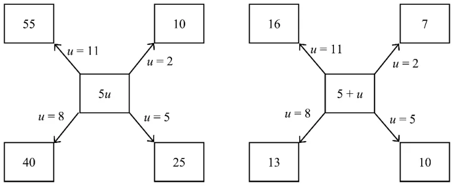
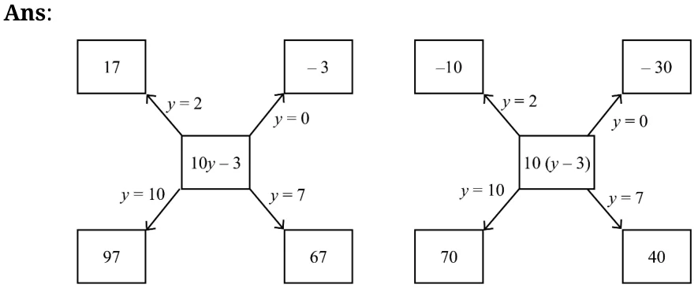
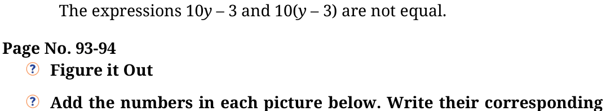
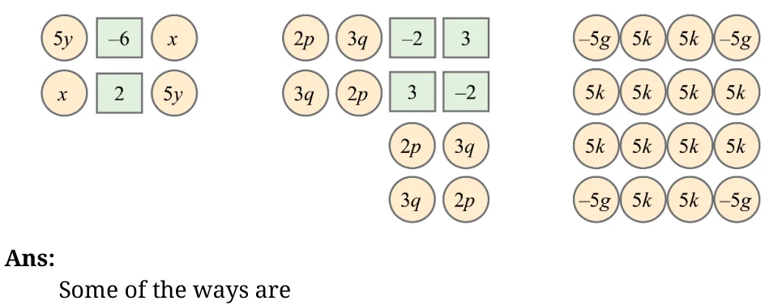
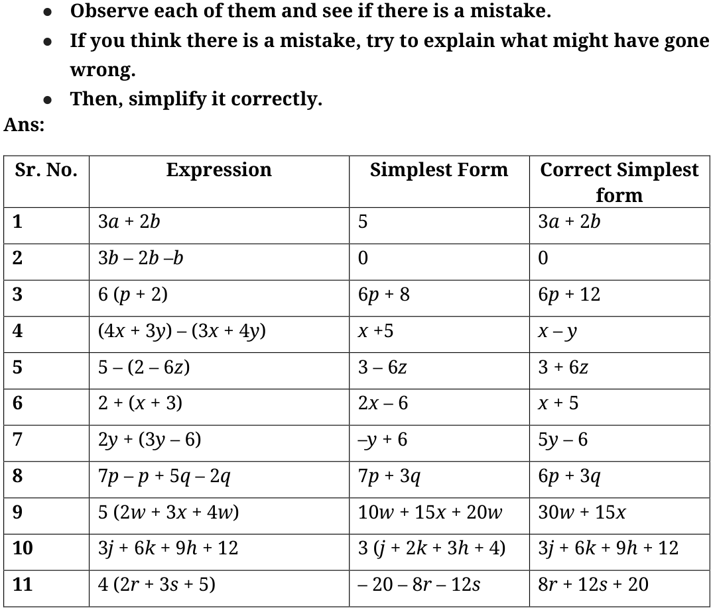
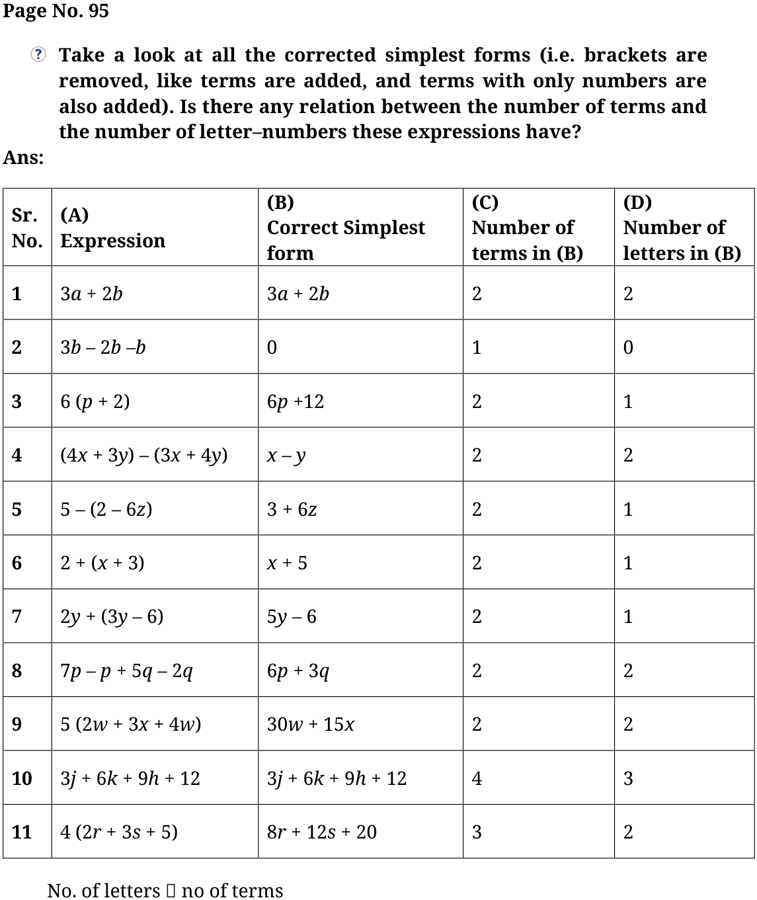
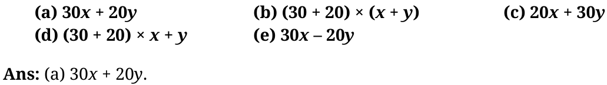
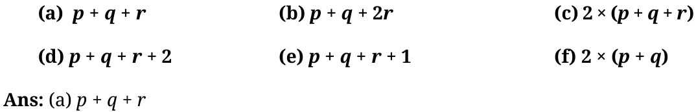

Ans:

After filling in the two diagrams, do you think the two expressions are equal?


expressions and simplify them. Try adding the numbers in each picture in a couple different ways and see that you get the same thing.

- (i)Method 1: Group by Like Terms
\(5y + x + x + 5y +\) ( \(- 6) + 2 = (5y + 5y) +\) (x + x) + ( \(- 6 + 2) = 10y + 2x - 4\)
Method 2: Group by Rows
Top row: \(5y +\) ( \(- 6) + x\) Bottom row: \(x + 2 + 5y\)
Combine: \((5y + 5y) +\) (x + x) + ( \(- 6 + 2)\)
\(=10y + 2x - 4\)
Final Number: \(10y + 2x - 4\) Try some other ways!
- (ii)Method 1: Group by Term Type
2p appears 4 times: 8p 3q appears 4 times: 12q Final number: \(3 +\) ( \(- 2) +\) ( \(- 2) + 3 = 2\)
Total: \(8p + 12q + 2\)
Method 2: Group by Columns
Column 1: \(2p + 3q\) Column 2: \(3q + 2p\) Column 3: ( \(- 2) + 3 + 2p + 3q = 1 + 2p + 3q\) Column 4: \(3 +\) ( \(- 2) + 3q + 2p = 1 + 3q + 2p\)
Final Number: \(8p + 12q + 2\) Try some other ways!
- (iii)Method 1: Group by Term Type
\(- 5g\) appears 4 times: \(- 20g 5k\) appears 12 times: 60k
Total: \(- 20g + 60k\)
Method 2: Group by Columns
First column: \(- 5g + 5k + 5k +\) ( \(- 5g) = - 10g + 10k\) Middle columns 2 and 3 all \(5k = 8 \times 5k = 40k\) Last column: \(- 5g + 5k + 5k +\) ( \(- 5g) = - 10g + 10k\) Total of all: \(= - 10g + 10k + 40k - 10g + 10k\)
\(= - 20g + 60k\)
Try some other ways!
Simplify each of the following expressions:
- (a)\(p + p + p + p\), \(p + p + p + q\), \(p + q + p - q\)
- (b)\(p - q + p - q\), \(p + q - p + q\)
- (c)\(p + q -\) (p + q), \(p - q - p - q\)
- (d)\(2d - d - d - d\), \(2d - d - d - c\)
- (e)\(2d - d -\) (d - c), \(2d -\) (d - d) \(- c\)
- (f)\(2d - d - c - c\)
Ans:
- (a)4p, \(3p + q\), 2p (b) \(2p - 2q\), 2q (c) 0, \(- 2q\)
- (d)\(- d\), \(- c\) (e) c, \(2d - c\) (f) \(d - 2c\)
Some simplifications of algebraic expressions are done below. The expression on the right - hand side should be in its simplest form.


Page No. 96
Find the formulas of the number machines below and write the expression for each set of inputs.
Ans: (i) Formula: Two is subtracted from the sum of the two numbers. Algebraic expression \(= a + b - 2\)
- (ii)Formula: One is added to the multiplication of two numbers.
Algebraic expression= (a \(\times\) b) \(+ 1 =\) ab \(+ 1\)
4th expression: \(10 \times 3 + 1 = 30 + 1 = 31 5th\) expression: \(a \times b + 1\)
Page No. 97
Use this to find what design appears at positions 99, 122, and 148. Ans:
- 1.Design C appears at position 99.
- 2.Design B appears at position 122.
- 3.Design A appears at position 148.
Page No. 99
Will this always happen? How do you show this?
Ans: Let’s build a similar \(3 \times 3\) grid with a Centre number a.
\(a - 1 a a + 1 a + 7\)
Here, the sum is \(a - 7 + a - 1 + a + a +1 + a + 7 = 5a\) (5times the number in the Centre.)
Page No. 101.
What are these numbers in Step 3 and Step 4? Ans:
Step 3: No. of matchsticks placed horizontally-3 No. of matchsticks placed diagonally-4
Step 4: No. of matchsticks placed horizontally-4 No. of matchsticks placed diagonally-5
How does the number of matchsticks change in each orientation as the steps increase? Write an expression for the number of matchsticks at Step ‘y’ in each orientation. Do the two expressions
add up to \(2y + 1\)?
Ans:
For horizontal placement: 1, 2, 3, 4, … At the yth step, the number of horizontal matchsticks \(= y\). For diagonal placement: 2, 3, 4, 5, … At the yth step, the number of diagonal matchsticks \(= y + 1\). Yes.
Page No. 102.
- 1.One plate of Jowar roti costs ₹30 and one plate of Pulao costs ₹20. If x
plates of Jowar roti and y plates of pulao were ordered in a day, which expression(s) describe the total amount in rupees earned that day?

- 2.Pushpita sells two types of flowers on Independence Day: champak and
marigold. ‘p’ customers only bought champak, ‘q’ customers only bought marigold, and ‘r’ customers bought both. On the same day, she gave away a tiny national flag to every customer. How many flags did she give away that day? )
